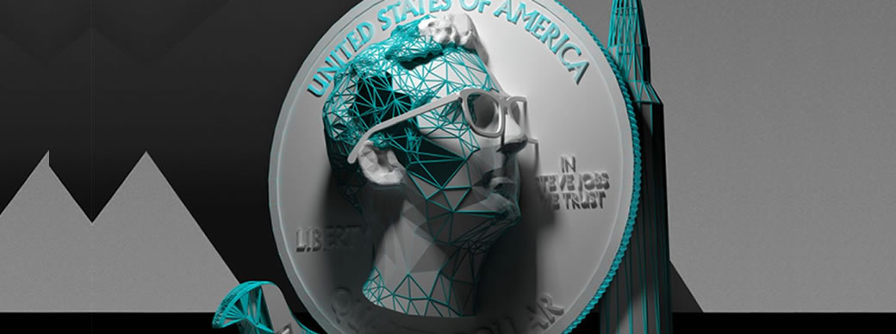

MakerBot
MAKERBOT INDUSTRIES(2009)
Anda Mayoer: SOFWARE, Co-fundador que junto con Pettis y Zach Smith, ayudó a desarrollar y lanzar los primeros productos de la empresa.
Zach Smith: INGENIERIA Co-fundador también y una figura importante en el movimiento de hardware abierto, contribuyendo a la creación de las primeras impresoras 3D de MakerBot.
Bre Petiis: (CEO) DESGIN MARKETING, fue el rostro público de MakerBot durante sus primeros años y desempeñó un papel importante en popularizar la tecnología de impresión 3D a nivel de consumidor.
Es una de las empresas más destacadas en el documental. La compañía, conocida por sus impresoras 3D asequibles y accesibles, busca llevar esta tecnología hasta la comunidad de nuestras casas.
2014 la empresa enfrenta problemas técnicos y críticas por la calidad de sus productos, especialmente con el lanzamiento de la Replicator 5th Generation.
2015 Bre Pettis deja MakerBot para explorar otras oportunidades. La empresa pasa por varias rondas de despidos y reestructuración para ajustar sus operaciones y mejorar sus productos las cuales los lleva a continuos cambios, que hacen que la empresa pase por diversos inconvenientes.
Formlabs
Es una empresa estadunidense 2011 por:
Fundada en el 2011 por Maxim Lobovsky, Natan Linder y David Cranor.
Se especializa en impresoras 3D de alta resolución utilizando tecnología de estereolitografía. El startup recibe atención significativa cuando lanza una campaña de Kickstarter muy exitosa, pero pronto enfrenta desafíos legales, especialmente una demanda por infracción de patentes de 3D Systems, una empresa más establecida en el sector.
Formlabs ha sido fundamental en democratizar el acceso a la impresión 3D de alta calidad, permitiendo que tanto profesionales como pequeñas empresas puedan beneficiarse de esta tecnología avanzada. Su enfoque en la innovación y la calidad ha consolidado su posición como uno de los líderes en la industria de la impresión 3D.